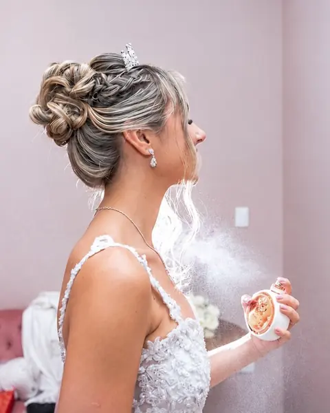
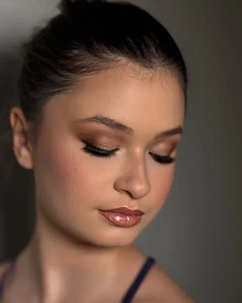
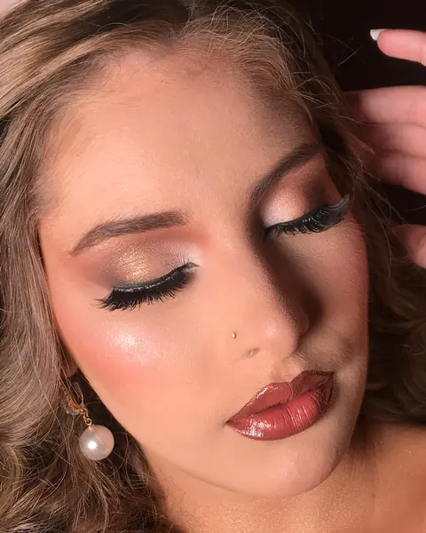
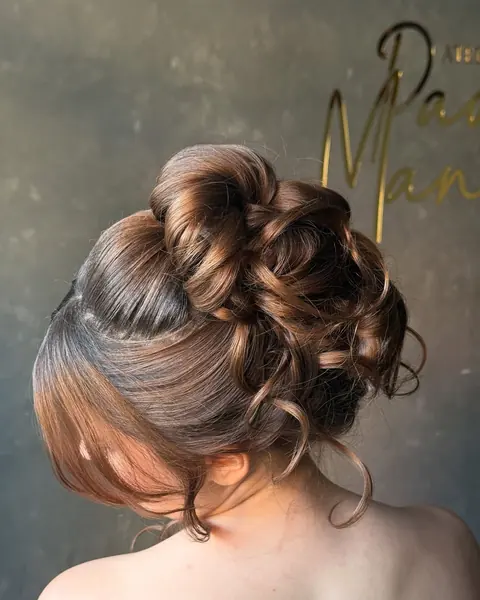
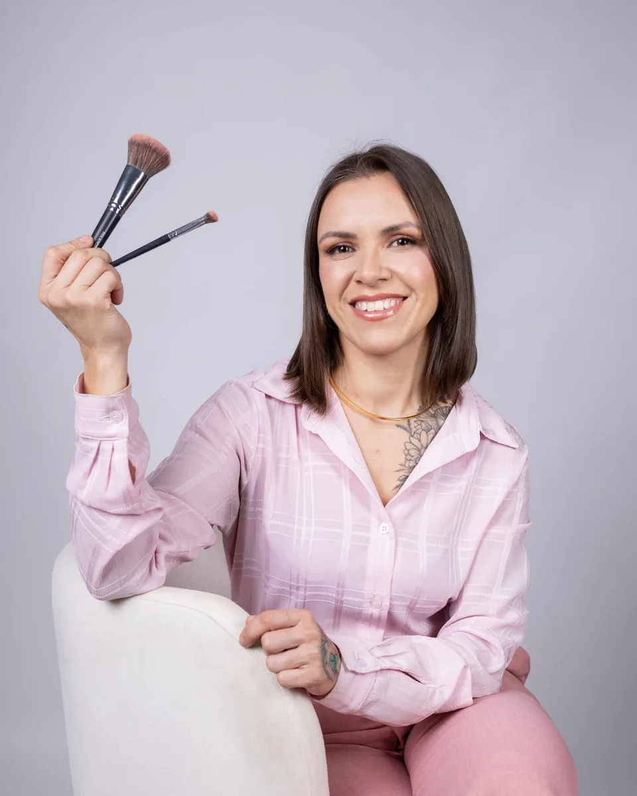

Dia da Noiva
Make e penteado da noiva com atendimento exclusivo no ateliê, cronograma do dia e tempo reservado para o making-of.
- Maquiagem e penteado
- Cronograma do grande dia
- Noivas 2026, 2027 e 2028
Maquiagem e penteado para noivas, madrinhas e debutantes no Ateliê Paola Mancini, em São José dos Campos. Seu grande dia merece uma profissional que cuida de você do início ao fim.
Não faço maquiagem. Revelo quem você sempre foi.Paola Mancini
Maquiagem e penteado feitos à mão, com técnica e acabamento pensados para durar a festa inteira, da primeira foto à última dança.

Make e penteado da noiva com atendimento exclusivo no ateliê, cronograma do dia e tempo reservado para o making-of.

A mesma entrega da noiva para quem divide o palco com ela, com equipe para atender o grupo no mesmo dia.

Para formaturas, festas e eventos: pele blindada, olhar marcante e uma make que resiste à emoção e ao calor.

Coques, semi presos, tranças e ondas estruturadas. Técnica russa para volume que mantém o desenho por horas.
Pacotes de penteado + make personalizados. Peça o seu orçamento.
É sobre cuidado, acolhimento e a segurança de saber que a sua beleza fica impecável do início ao fim. Sem atrasos, sem imprevistos.
Entro em contato para alinhar os detalhes e saber se você precisa de ajuda com alguma coisa.
Você recebe as recomendações e a lista do que levar: vestido, buquê, sapatos, brincos e acessórios para as fotos.
Tudo pronto e organizado no ateliê para você chegar, respirar e aproveitar. Só palavras boas e alegria.
Um horário para cada etapa e uma hora reservada para o fotógrafo registrar o seu making-of.
Noivas reais, penteados e editoriais assinados pela Paola.
Mensagens que as noivas mandaram depois do grande dia.
A Paola foi incrível, super atenciosa comigo, com minhas madrinhas e com minha sobrinha. O dia foi leve, especial e cheio de amor. A maquiagem ficou perfeita, do jeitinho que eu queria.
Uma ótima ouvinte, fez de tudo para deixar o dia, que é muito estressante, ser calmo. Eu e minha família indicamos ela de olhos fechados. As makes e cabelo, simplesmente um arraso.
Seu acolhimento foi o que tornou todo o processo tranquilo e leve, mesmo com muita ansiedade. Muito obrigada mesmo, indico de olhos fechados!
Você fez exatamente o penteado e a maquiagem que eu queria. Me senti maravilhosa, todo mundo elogiou, até quem achou que ia ficar carregado.
Agradeço pelo seu trabalho, sua equipe e pela pessoa acolhedora que você se mostrou ser, desde o início ao fim. Você foi perfeita.
Enquanto você me maquiava, parecia que cada traço carregava um pedacinho da nossa história. Me senti linda, confiante e abraçada.

Maquiadora e penteadista há 13 anos, especialista em noivas. No ateliê em São José dos Campos, cada produção começa pela escuta: entender quem é a noiva antes de pegar o primeiro pincel.
Os penteados seguem a técnica russa, com marcações aparentes, volume estratégico e encaixe que mantém o desenho intacto por horas. Na make, pele luminosa e resistente, feita para a emoção do casamento.